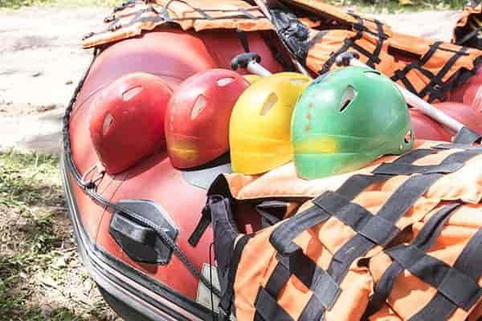

About Us - Whitewater Rafting Adventures

Our company is dedicated to providing you a great and highly dangerous whitewater rafting adventure. Our mission is that you will be lucky to come back alive. But if you do survive you will have a story to tell your grandkids for the ages. Just how close they were to not existing. Our creed is "We take your money AND the skin of your teeth." Our motto is "We're going to go down THAT!!"